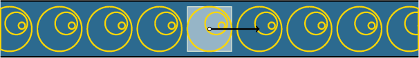
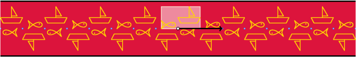
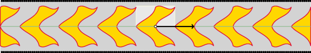
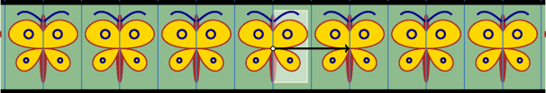
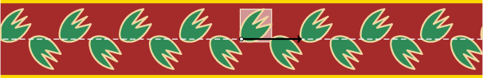
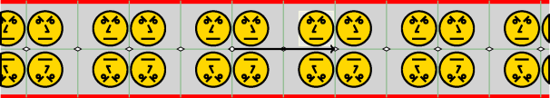
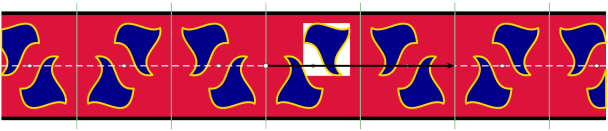

|  | Type f1: le groupe des isométries est constitué des translations de vecteurs ku avec k entier. |
|  | Type f2: le groupe des isométries est constitué des translations de vecteurs ku et des symétries centrales de centre O+ku/2 avec k entier. |
|  | Type f1m: le groupe des isométries est constitué des translations de vecteurs ku avec k entier, et de la symétrie axiale d'axe (O,u). |
|  | Type fm1: le groupe des isométries est constitué des translations de vecteurs ku et des symétries axiales d'axe (O+ku/2,n) avec k entier, et n vecteur normal à u. |
|  | Type f1g: le groupe des isométries est constitué des translations de vecteurs ku et des glissements d'axe (O, u) et de vecteur (2k+1)u/2, avec k entier. |
|  | Type f2m: le groupe des isométries est constitué de la symétrie axiale d'axe (O,u), des translations de vecteurs ku, des symétries axiales d'axe (O+ku/2,n) (avec n normal à u), des symétries centrales de centre O+ku/2 avec k entier. |
|  | Type fm2: le groupe des isométries est constitué des translations de vecteurs ku, des glissements d'axe (O, u,) et de vecteur (2k+1)u/2, des symétries axiales d'axe (O+ku/2,n) (avec n normal à u), et des symétries centrales de centre O+(2k+1)u/4 avec k entier. |